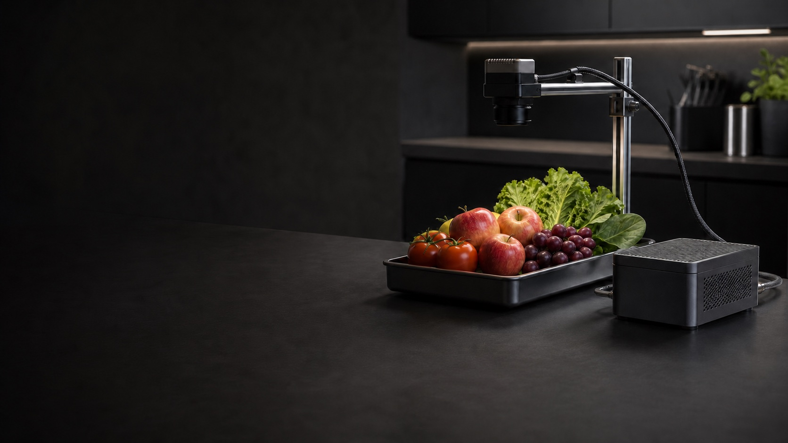
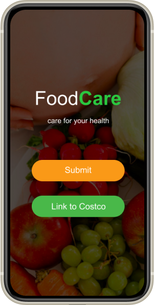
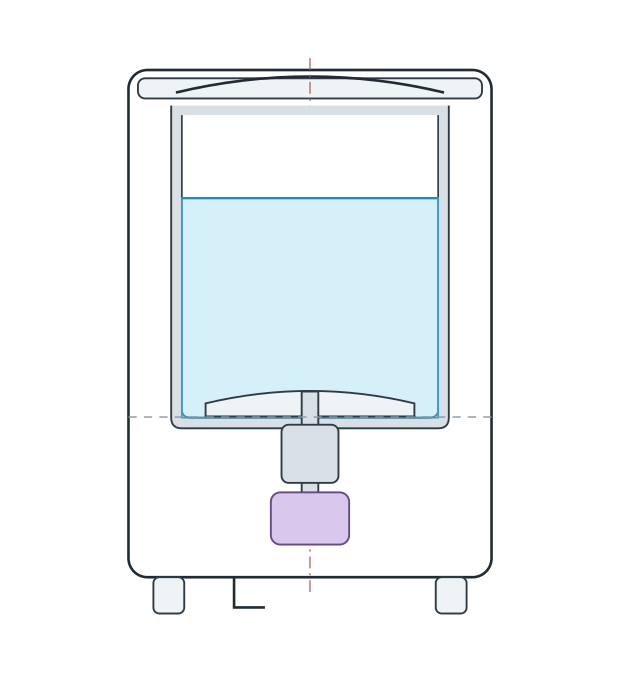

01 / INTERACTION
MoodBall
从情绪与交互出发，探索一个可触及的小物件如何参与日常体验。
情绪 · 交互 · 原型
Ideas made testable.
从一个观察开始，把想法做成可以感受、可以尝试的原型。这里放着关于人与技术，也关于日常关怀的四段探索。
从情绪与交互出发，探索一个可触及的小物件如何参与日常体验。
情绪 · 交互 · 原型

Smart Medication Support 探索识别、提醒与记录的自动化边界：把系统看到了什么、准备做什么说清楚，也让人能够确认、调整与纠正。
研究原型 · 透明反馈与用户控制
查看项目

把食物识别、储存信息和可查看的饮食提示连接起来。通过硬件与移动界面原型，再向适合长者与家庭的语音辅助关怀延伸。
研究与交互原型 · 食物识别、信任与日常关怀
查看项目
围绕洗衣这件日常小事，探索紧凑产品与生活空间之间的关系。
产品 · 空间 · 日常关怀
小小栖居 · 留一点空间给新的想法